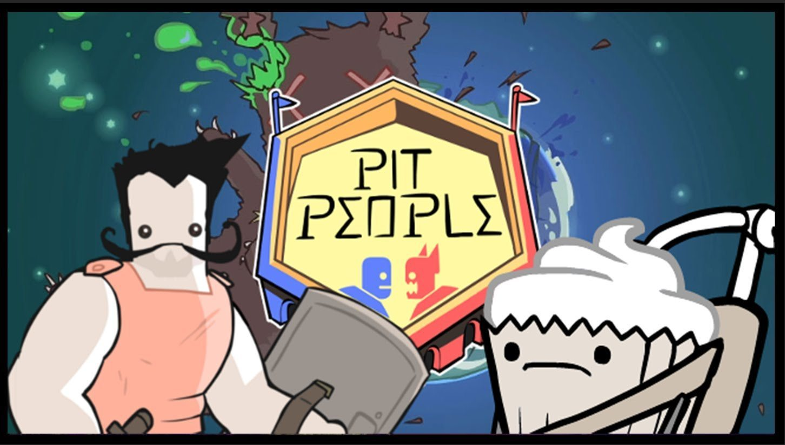

Pit People
Pit People é um jogo eletrônico de estratégia do estilo RPG de ação lançado pela desenvolvedora independente The Behemoth. Uma versão de acesso antecipado para Microsoft Windows e Xbox One foi liberada em janeiro de 2017, e o lançamento completo do jogo ocorreu em março de 2018.
XCOM 2
XCOM 2 é um videojogo táctico por turnos produzido pela Firaxis Games e publicado pela 2K Games para Microsoft Windows, OS X e Linux a 5 de fevereiro de 2016. Em XCOM 2 a história tem lugar 20 anos depois dos eventos ocorrido em XCOM: Enemy Unknown (2012), depois do XCOM ter perdido a guerra contra as forças alienígenas.
Inscryption
Inscryption é um jogo eletrônico de construção de baralho roguelike desenvolvido pela Daniel Mullins Games e publicado pela Devolver Digital. O jogo se passa em uma cabine onde o jogador tenta escapar derrotando uma força demoníaca em um jogo de cartas. Inscryption foi lançado em 19 de outubro de 2021 para Microsoft Windows. O jogo recebeu avaliações positivas e recebeu o prêmio de Jogo do Ano na Game Developers Choice Awards.